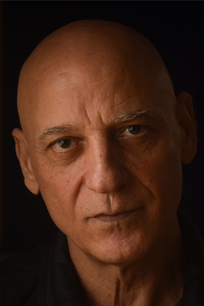

שיחה בינינו, דרך המספרים שליוו אותך מהרגע שנולדת - יחד נגיע להבנה עמוקה יותר על מי שאתה, על הדפוסים, החוזקות והדרך שמתאימה לך.
לקביעת פגישה ועלות
במשך שנים רבות חייתי ונשמתי את עולמות היצירה והאומנות, בעיקר דרך המוזיקה והצילום. במקביל, תמיד פעמה בי המשיכה העמוקה לעולמות הריפוי וההתפתחות האישית והרוחנית. למדתי והעמקתי בשיטות מגוונות (הילינג, רייקי, שיאצו וביו-אנרגיה) ואף ניהלתי קליניקה טיפולית משלי.
הנומרולוגיה ליוותה אותי תמיד, קצת ברקע, עד שבשנים האחרונות הפכה לחלק מרכזי בעשייה שלי. עבורי, הנומרולוגיה היא לא מיסטיקה מרוחקת או עולם אזוטרי – היא כלי עבודה מדויק, פרקטי ומבוסס. היא מאפשרת לי "לקרוא" את המפה הפנימית של האדם הניצב מולי, לזהות פוטנציאלים וחסמים, ולסייע לו להגיע למודעות עצמית גבוהה ופריצת דרך.
היום, מתוך בשלות של דרך חיים עשירה, אישית ומקצועית כאחד, אני כאן כדי ללוות אתכם במסע שלכם, ולתת לכם את המפתחות המדויקים להתפתחות פנימית רוחנית ולבחירות נכונות.
המפגש שלנו הוא קודם כל שיחה בגובה העיניים בין שני אנשים. דרך המפה הנומרולוגית והמספרים שלכם, נעבוד יחד כדי להבין טוב יותר את מי שאתם: נזהה את החוזקות הטבעיות שלכם, נסמן את הנקודות שכדאי לשים אליהן יותר לב, ונבין מה אפשר לשנות ומה כדאי ללמוד לקבל באהבה. במהלך השיחה נסתכל גם קדימה אל העתיד, וגם נבין איך מצבים והשפעות מהעבר מעצבים את ההווה שלכם.
המפגש מיועד גם למי שנמצא כרגע בצומת דרכים משמעותי (שינוי קריירה, זוגיות, מעברי חיים והחלטות גדולות), וגם למי שפשוט מרגיש שהגיע הזמן להעמיק בהכרת עצמו, להתפתח ולמצוא בהירות פנימית.
אני מלווה אתכם בתהליך שמותאם בדיוק אליכם. בלי הגדרות נוקשות או נוסחאות קבועות, אלא מתוך הקשבה אמיתית ועבודה משותפת על מה שבאמת חשוב לכם.
דרך המספרים שלכם, נעבוד יחד כדי לזהות את הדרך שבאמת מתאימה לכם. נבין מהו ה"ייעוד" שלכם – אבל בלי המילים הגדולות, פשוט ובגובה העיניים.
כשאתם עומדים בפני החלטה גדולה כמו שינוי קריירה, מעבר, או זוגיות חדשה, אני כאן כדי לעזור לכם לעשות סדר בבלבול, לראות את הדברים בבהירות ולצעוד בביטחון.
אני עוזר לזוגות להבין טוב יותר את הדינמיקה ביניהם. נראה יחד מאיפה מגיעות אי-ההבנות, ונלמד איך לגשר על הפערים וליצור תקשורת מקרבת, תומכת ומבינה.
לפעמים הדרך הכי טובה להתקדם היא פשוט להכיר את עצמכם קצת יותר לעומק. נצא יחד למסע שבו תגלו מחדש את הכוחות והאיכויות שאולי שכחתם שקיימים בתוככם.
תובנות זה נהדר, אבל המטרה היא להביא אותן לתוך החיים עצמם. אני מציע לכם כלים מעשיים ופרקטיים שיכולים לעזור לכם ליישם את השינוי ולהתקדם לעבר מה שאתם באמת רוצים.
מאחוריי שנים ארוכות של למידה וטיפול בעולמות הריפוי וההתפתחות האישית. הנה התחנות המרכזיות שעיצבו את דרכי:
לימוד מעמיק ואינטנסיבי אצל מספר מורים פרטיים מובילים בתחום. לאורך הדרך חקרתי כלים נוספים להבנת נפש האדם (ביניהם גם קלפי טארוט), אך בנומרולוגיה מצאתי את השפה המדויקת, המבוססת והנכונה ביותר עבורי.
לימודים והסמכה בבית הספר "תמורות" - מהמוסדות הוותיקים והמובילים בישראל לרפואה משלימה.
לימוד והעמקה בשיטה הייחודית בהדרכתו הישירה של רפי רוזן (מפתח השיטה בארץ).
הגעה לדרגה 2, המאפשרת עבודה אנרגטית עמוקה וממוקדת.
השילוב שהוא היתרון שלכם: כל הכלים והניסיון שצברתי לאורך השנים בתחומי המגע, הטיפול והאנרגיה, מתנקזים היום לתוך הייעוץ הנומרולוגי שלי. הם מאפשרים לי לא רק לקרוא מספרים, אלא באמת להקשיב לכם, לראות אתכם מעבר למילים ולתת לכם ליווי עמוק ומקיף במיוחד.
כמה מילים מאנשים שליוויתי
יורם אדם מיוחד בעל שילוב נדיר של יצירתיות, רגישות ועומק. הוא יודע להקשיב באמת, לשאול את השאלות הנכונות ולהעניק תובנות מתוך מקום כן ואכפתי.
החוויה הייתה מדויקת ומלאה בתובנות משמעותיות. יורם הפגין רגישות רבה ונטולת שיפוטיות, וסקרנות אמיתית להכיר אותי דרך המספרים. ממליצה בחום על הייעוץ שלו.
יורם יודע להתחבר לאנשים, להסביר דברים בצורה ברורה ומדויקת, ונותן תחושה שיש מי שמקשיב ומכוון באמת. קיבלתי תובנות משמעותיות וכלים שעזרו לי מאוד.
בענווה, בפשטות ובעדינות יורם הראה לי דברים נכונים כל כך על הזוגיות שלי. הוא אישר תחושות שלי וחידש לי נקודות מבט על החיים.
הגעתי בלי לדעת למה לצפות, והוא היה מדויק ברמות. יצאתי מהפגישה עם הרבה חומר למחשבה ותחושה טובה. ממליצה מכל הלב לכל מי שמתלבט.
או השאירו פרטים ואחזור אליכם